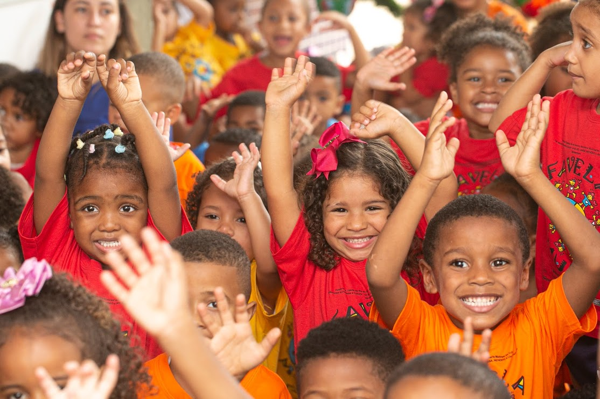

Quem Somos
Na Caminhos Solidários, acreditamos na força da união e da empatia para transformar vidas. Somos uma organização sem fins lucrativos que promove ações sociais voltadas ao bem-estar de comunidades em situação de vulnerabilidade. Nosso trabalho é guiado por valores como solidariedade, respeito e compromisso com a construção de uma sociedade mais justa e acolhedora.
Nossa Missão
Nosso objetivo é proporcionar apoio e recursos para aqueles que mais precisam, oferecendo serviços de assistência social, educação, saúde e inclusão. Trabalhamos em parceria com voluntários, empresas e outras organizações para maximizar nosso impacto e alcançar o maior número possível de pessoas.
Doe e Transforme Vidas
Na Caminhos Solidários, acreditamos que cada gesto de generosidade faz a diferença. Por isso, realizamos campanhas contínuas de arrecadação de roupas, alimentos, produtos de higiene e materiais escolares para apoiar famílias em situação de vulnerabilidade social.
-
- 👕Roupas e calçados
- novos ou usados, em bom estado.
-
- 🍲 Alimentos não perecíveis
- arroz, feijão, macarrão, óleo, leite, entre outros.
-
- 🧼 Produtos de higiene pessoal
- sabonete, pasta de dente, fraldas, absorventes.
-
- ✏️ Materiais escolares
- cadernos, lápis, mochilas, livros.
-
- 🧸 Brinquedos
- para proporcionar alegria às crianças assistidas.